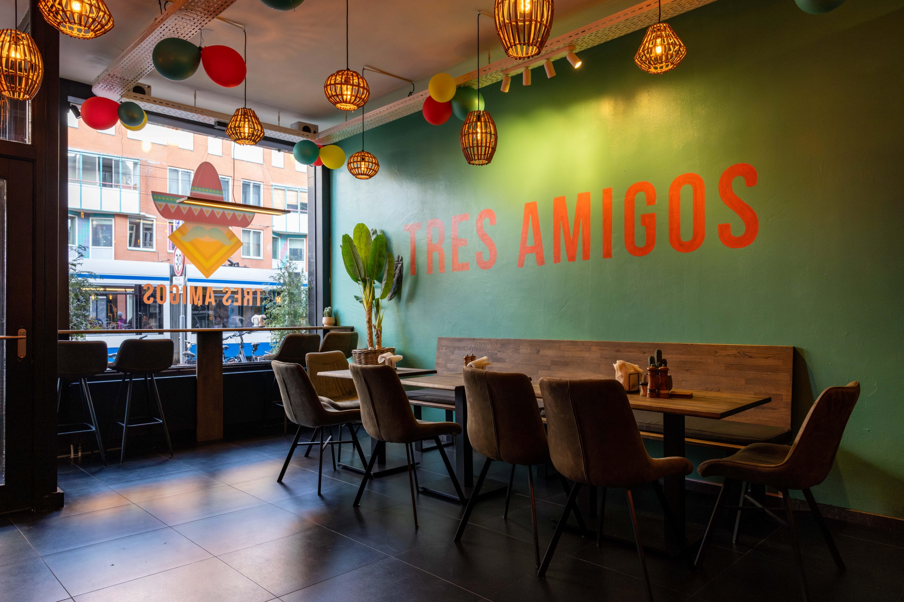
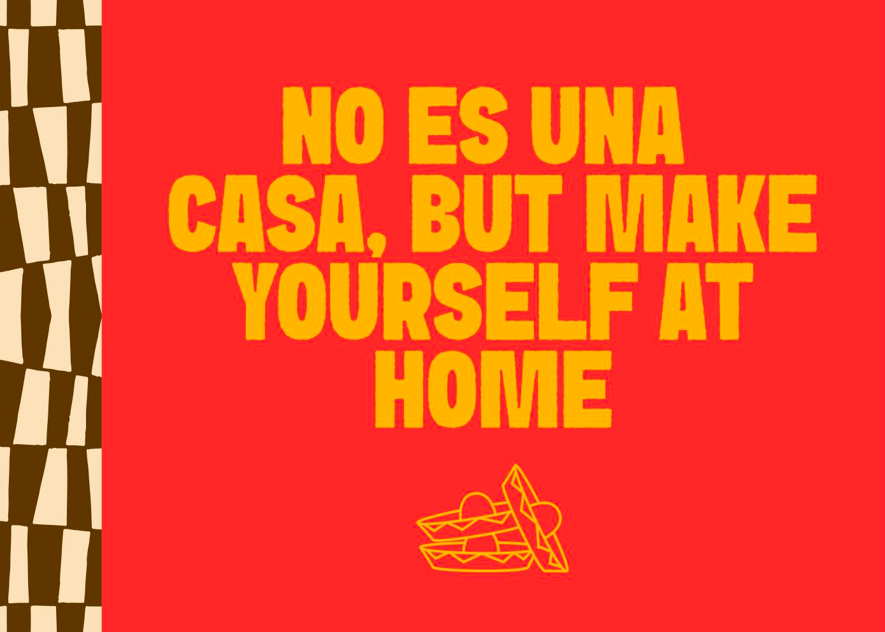

Freshly prepared classics with a modern twist, built around bold flavour and the new Tres Amigos identity.

Tres Amigos serves well known classics such as burritos, tacos and quesadillas with a modern twist. The website translates that same idea into the interface: familiar pages, stronger expression and a clearer food ordering flow.
The tone is direct, playful and easy to use. Perfect for people ordering lunch, dinner or late night Mexican comfort food.
